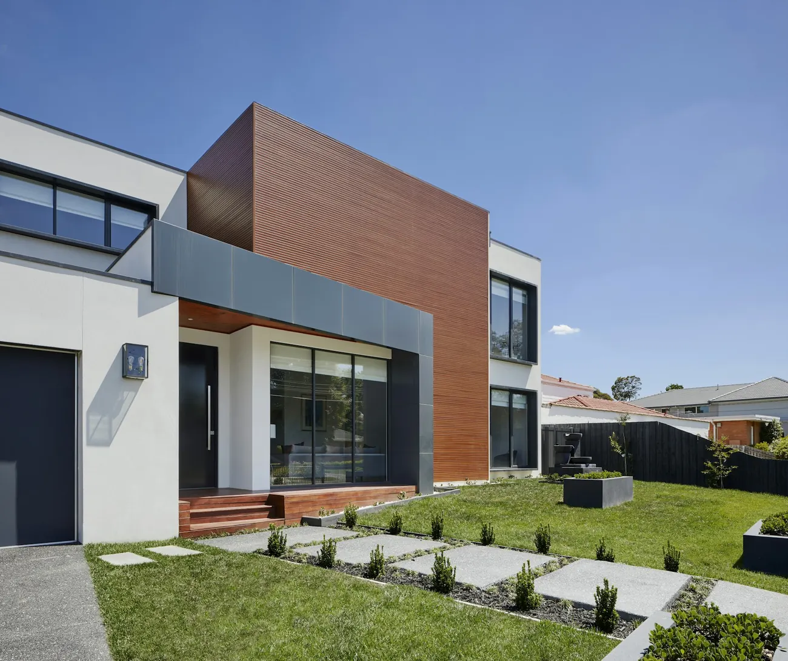
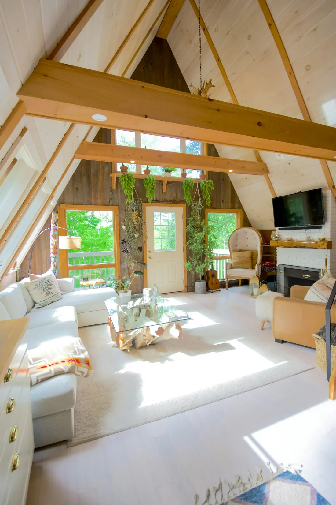
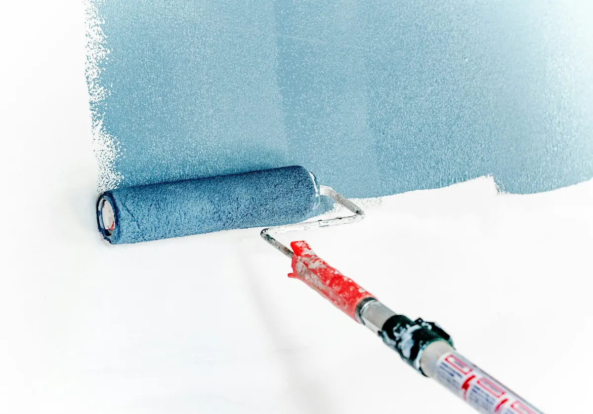
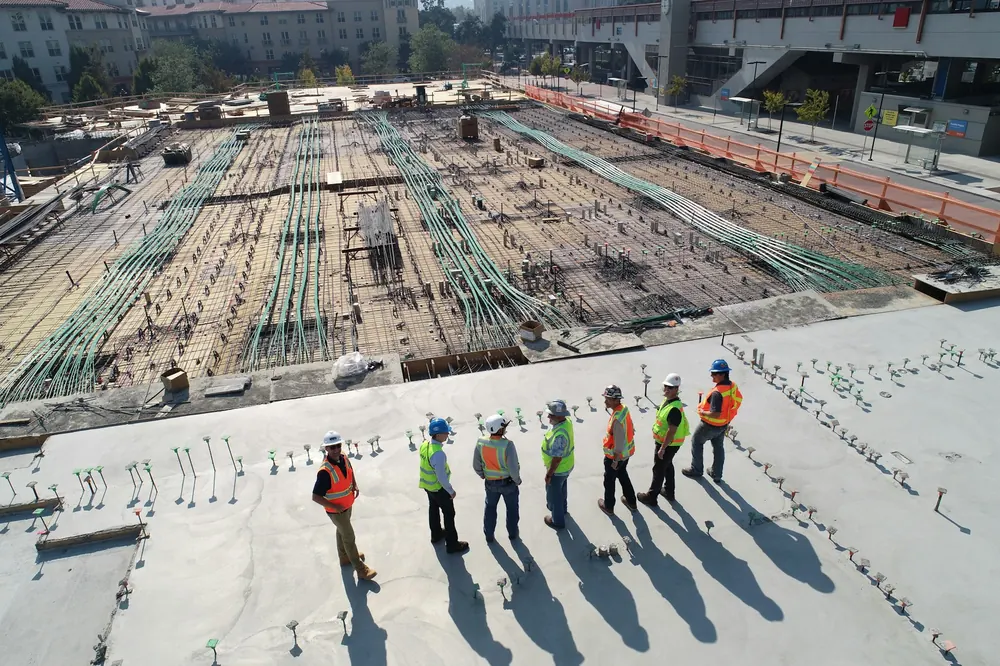
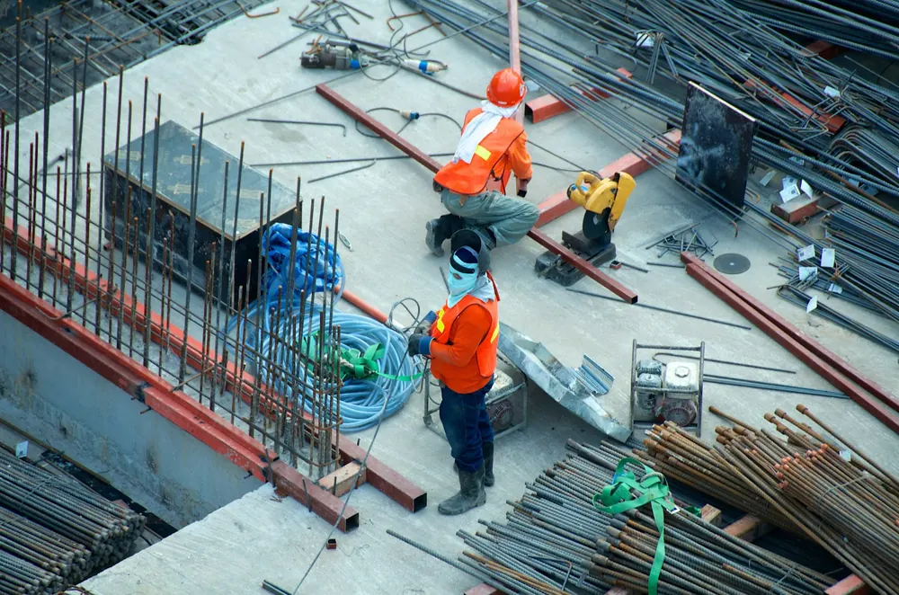
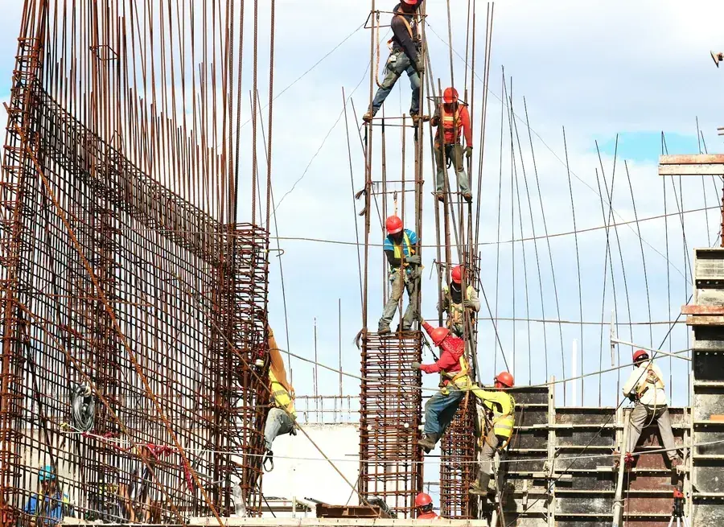

Nieuwbouw
Een eigen huis
Van een lege kavel naar een woning die past bij uw gezin, uw budget en de plek.
Architectenbureau Seys begeleidt uw bouwproject van het eerste gesprek aan de keukentafel tot de laatste steen. Met een architect die zelf op de werf staat.
Bij Architectenbureau Seys hebt u een architect die uw project kent. Peter Seys tekent mee, bespreekt elke keuze en staat op de werf wanneer het ertoe doet.
Ook architect Annelien volgt werven op. Een bouwheer prees haar correcte werkwijze op Google.



Bouwen of verbouwen is een traject van maanden. Klik door de stappen en zie wat er bij elke fase gebeurt, en wat u van de architect mag verwachten.
01Wat u krijgt:
Elk project begint bij hoe u wil wonen. Zo kan een vraag aan het bureau eruitzien.

Van een lege kavel naar een woning die past bij uw gezin, uw budget en de plek.

Een oudere woning aanpassen aan vandaag, met respect voor wat goed is.

Een extra leefruimte, een nieuwe keuken of een verdieping erbij.
"Als jonge starter heeft Annelien onze werf opvolging gedaan. We waren zeer tevreden over haar correcte werkwijze."Ming NichelsGoogle-review

Een architect in Diksmuide is snel ter plaatse wanneer er iets beslist moet worden.
Bouwen in de polder of in de stad vraagt telkens een andere aanpak.
Wie hier werkt, kent de aannemers en de vakmensen uit de streek.
U spreekt met de architect zelf, niet met een wisselend team.


Zo vroeg mogelijk, ook al voor u een grond koopt of een woning kiest om te verbouwen. Dan kan de architect meedenken over wat er mogelijk is.
Voor werken waarvoor een omgevingsvergunning nodig is, is de medewerking van een architect in de regel verplicht. Twijfelt u, bespreek het dan gewoon bij een kennismaking.
Ja. Werfopvolging hoort bij het werk van de architect. Zo blijven de plannen en de uitvoering op elkaar afgestemd.
Foto's van de woning of de grond, eventueel een plan of een kadastrale schets, en vooral uw wensen. Een ruw idee van uw budget helpt ook.
Een kennismaking is vrijblijvend. Bel, mail of laat uw gegevens na.
Een eerste schets, op maat van Architectenbureau Seys. U kiest de stijl, ik zorg dat alles klopt.
één keer, alles inbegrepen
Geen voorschot. U betaalt pas als de site klaar is.
Hosting en domein op uw naam. Een aanpassing vraagt u per keer aan.
Hosting en domein inbegrepen. Nieuwe acties, verlofdagen en wijzigingen zet ik er voor u op.
mijn aanraderStijn Vranken · 0496 25 14 45 · info@digital-impression.be